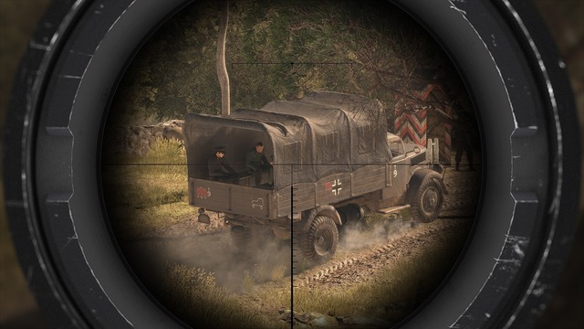

SNIPER ELITE 4
You know those elaborate machines built to make simple tasks more complicated, like striking a match or springing a mousetrap? They’re called Rube Goldberg machines, and they now have a shooter equivalent in Sniper Elite 4.
Rebellion’s stealth shooter shares the weaknesses and strengths of these contraptions. It’s long and complex, and taking your time to use all your gadgets can feel silly when blasting away at baddies often works fine. Just pick up the darn match and strike it yourself, right? However, Sniper Elite 4 doesn’t only give you the tools to kill Nazis in its (mostly) realistic World War II setting; it gives you the means to stalk them, scare them, and utterly dismantle them if you have the patience. Setting up traps doesn’t feel crucial outside of higher difficulty modes, but playing puppet master is always intuitive and rewarding. It’s by far the thing Sniper Elite 4 is best at. I found myself putting in the effort not because I had to, but because I wanted to.

If you’re going to put “Sniper” in the title of a game, you’d better put serious thought into your weapon mechanics. True to its name, Sniper Elite delivers options galore, but its single-player and co-op campaign wisely doesn’t force you to consider all of them all the time.
A lot of games tout the ability to “play how you want to play,” but Sniper Elite 4’s missions and mechanics actually are robust enough to back up that claim. Picking apart the Nazi war machine piece by piece, using whatever plan comes to mind, is a blast. The way it encourages you to stay mindful, experiment, and get better is a refreshing vote of confidence, even if it doesn’t always reward the extra effort you’re putting in.
Other Reviews
HALO WARS 2

FOR HONOR

STEEP

DEAD RISISNG 4